Label changes by method
campus_20261125T075508Z · 2-second windows · 507 changes across four methods.
Open a group to see its changes in time order. Each photo is the first frame with the new predicted label. Select a photo to open the original JPEG.
2 s / A · Baseline · Timed — 230 changes
2 s / B · Fine-tuned v2 · Timed — 88 changes
2 s / C · Baseline · Quality — 125 changes
Paving blocks → Other
15.352 s · Window 14–16 s Other → Paving blocks
Other → Paving blocks
17.786 s · Window 16–18 s Paving blocks → Unknown
Paving blocks → Unknown
31.575 s · Window 30–32 s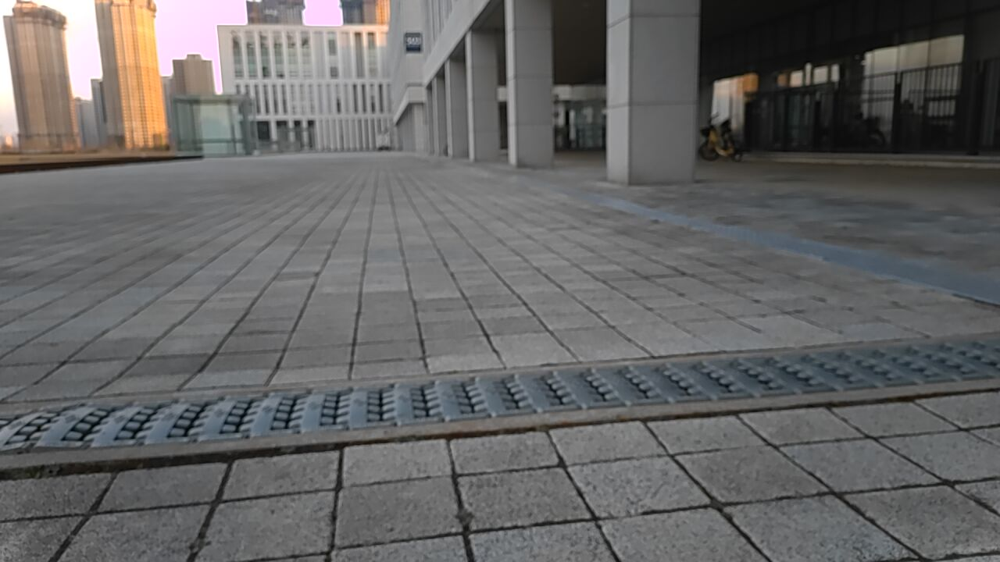
Unknown → Paving blocks
50.995 s · Window 50–52 sPaving blocks → Other
147.597 s · Window 146–148 s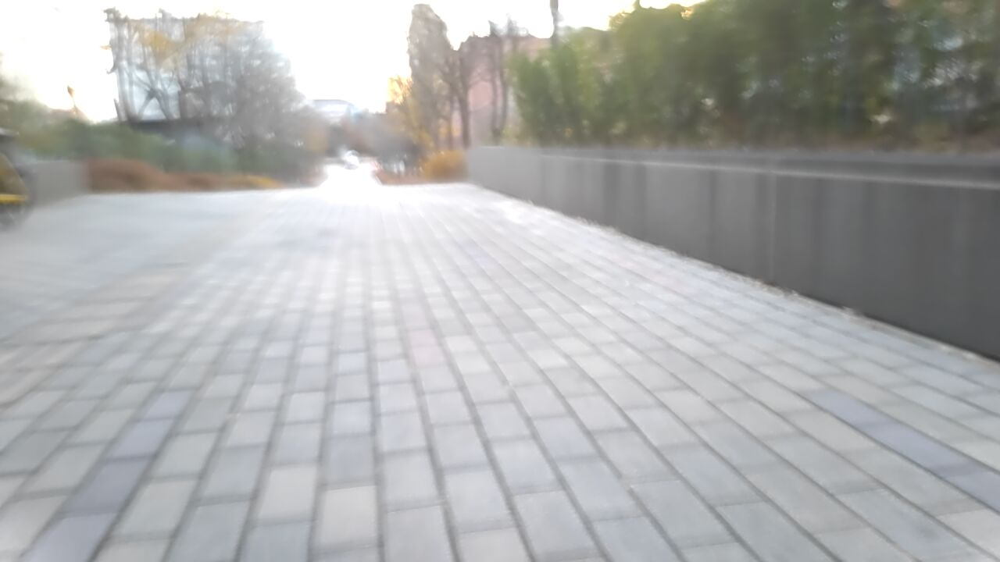
Other → Paving blocks
148.004 s · Window 148–150 sPaving blocks → Other
203.803 s · Window 202–204 s Other → Paving blocks
Other → Paving blocks
205.968 s · Window 204–206 s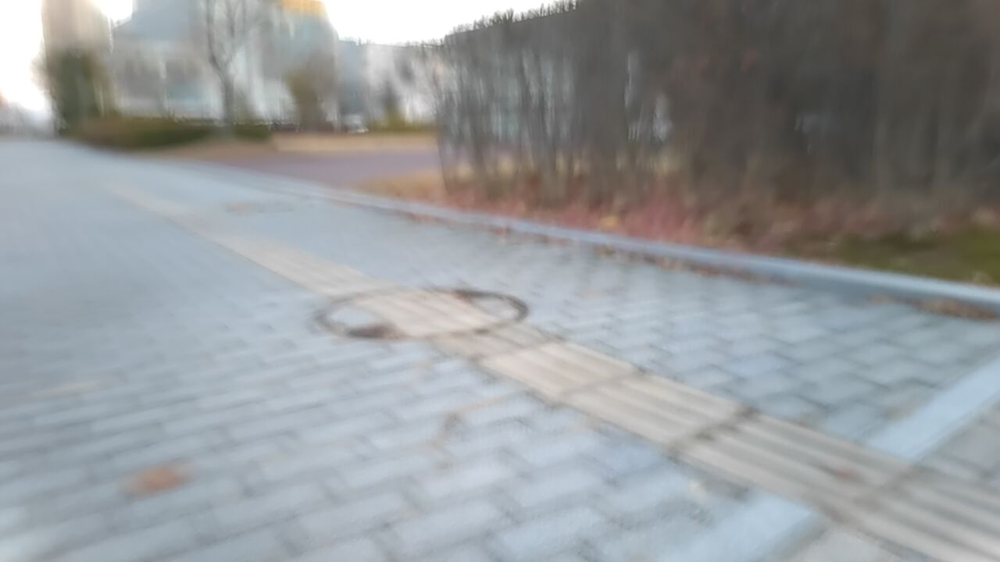
Paving blocks → Unknown
207.196 s · Window 206–208 sUnknown → Paving blocks
209.378 s · Window 208–210 sPaving blocks → Unknown
210.553 s · Window 210–212 sUnknown → Paving blocks
212.303 s · Window 212–214 sPaving blocks → Unknown
225.180 s · Window 224–226 s Unknown → Paving blocks
Unknown → Paving blocks
229.360 s · Window 228–230 sPaving blocks → Unknown
233.394 s · Window 232–234 s Unknown → Paving blocks
Unknown → Paving blocks
236.955 s · Window 236–238 s Paving blocks → Unknown
Paving blocks → Unknown
239.189 s · Window 238–240 sUnknown → Cement
242.585 s · Window 242–244 s Cement → Urethane
Cement → Urethane
245.380 s · Window 244–246 s Urethane → Cement
Urethane → Cement
247.957 s · Window 246–248 s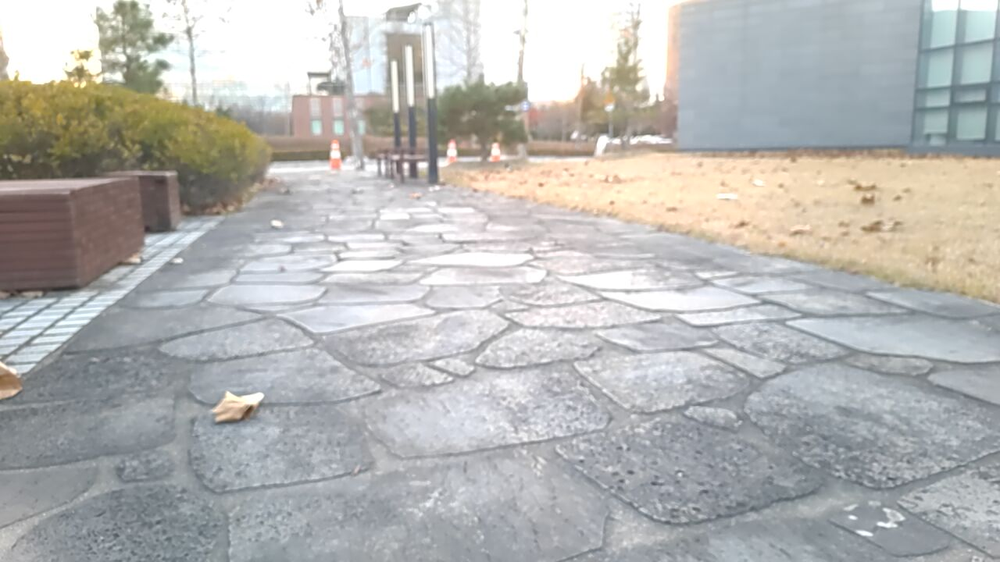
Cement → Unknown
251.297 s · Window 250–252 s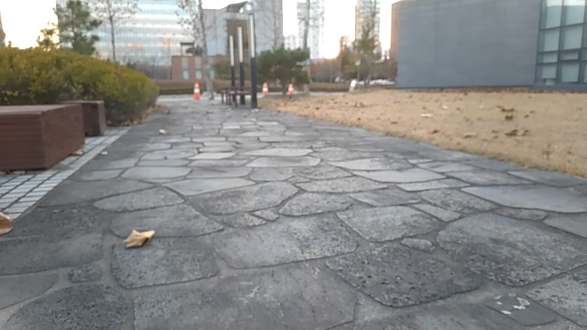
Unknown → Cement
253.942 s · Window 252–254 s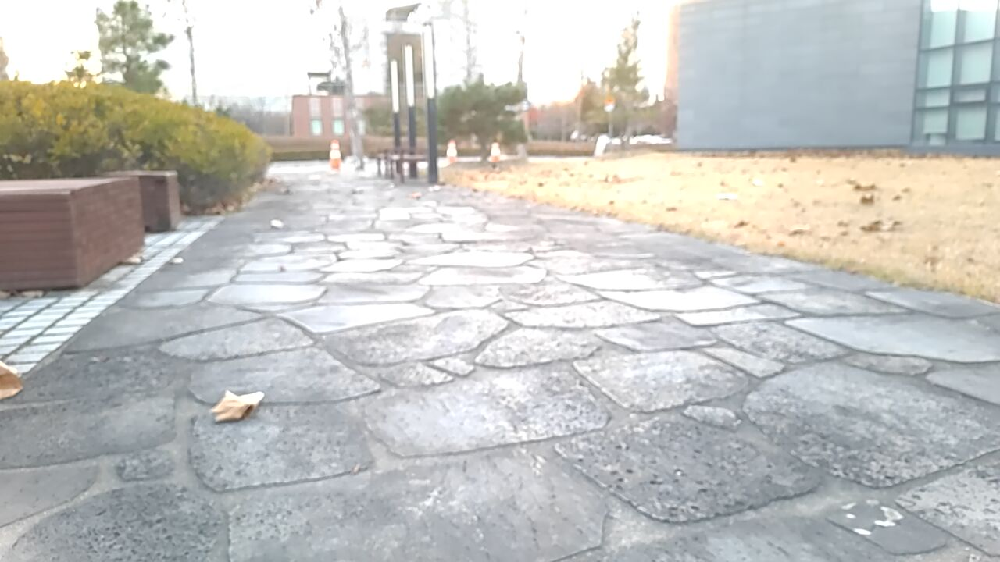
Cement → Unknown
255.607 s · Window 254–256 s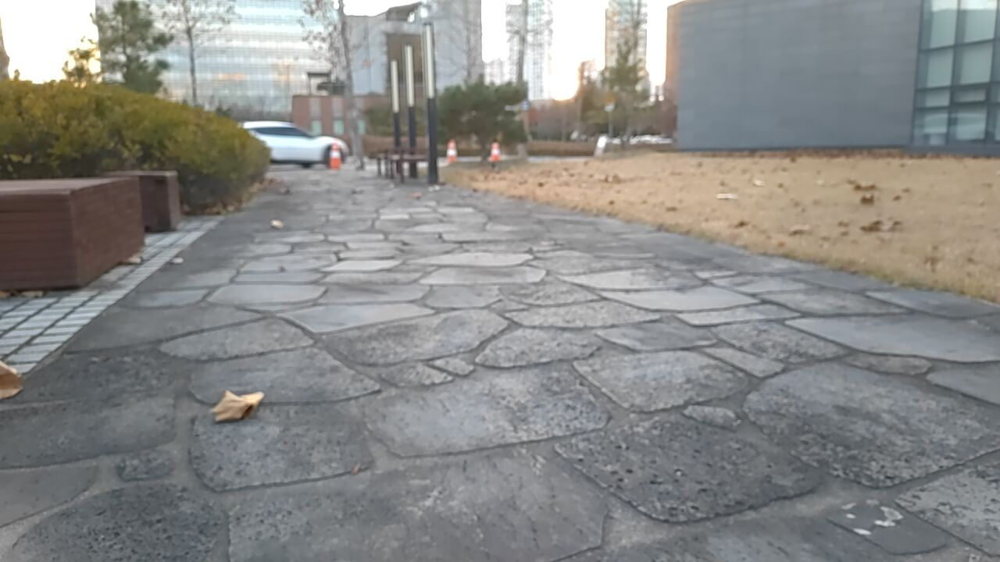
Unknown → Cement
256.389 s · Window 256–258 s Cement → Unknown
Cement → Unknown
259.783 s · Window 258–260 s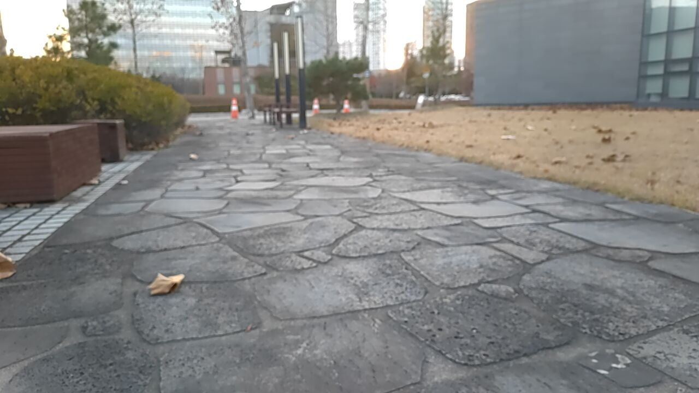
Unknown → Cement
260.351 s · Window 260–262 s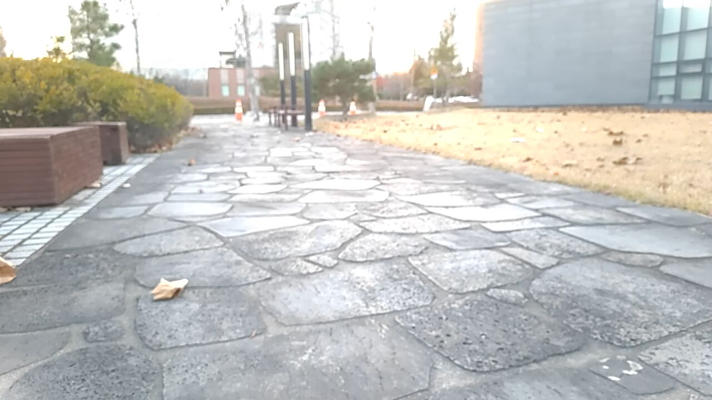
Cement → Unknown
262.172 s · Window 262–264 s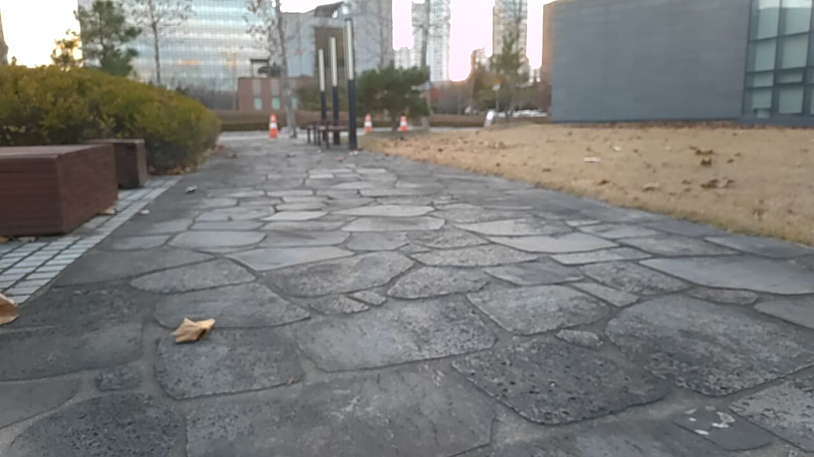
Unknown → Cement
268.085 s · Window 268–270 sCement → Unknown
271.577 s · Window 270–272 sUnknown → Cement
272.397 s · Window 272–274 sCement → Unknown
274.007 s · Window 274–276 sUnknown → Cement
277.197 s · Window 276–278 s Cement → Unknown
Cement → Unknown
281.998 s · Window 280–282 s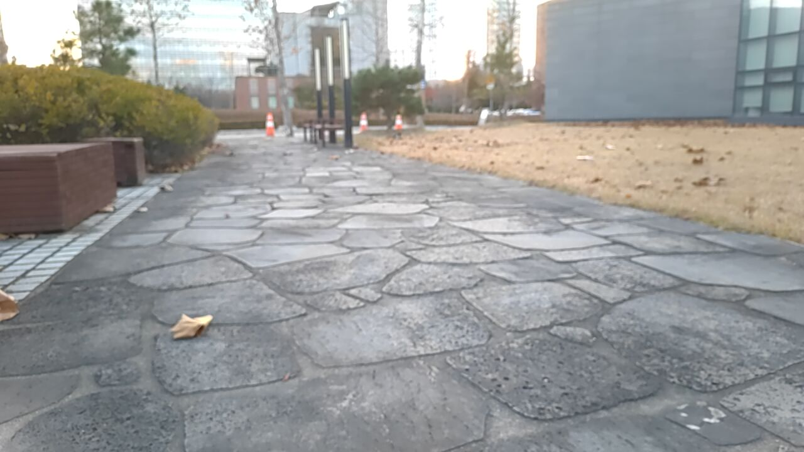
Unknown → Cement
284.382 s · Window 284–286 sCement → Unknown
292.594 s · Window 292–294 s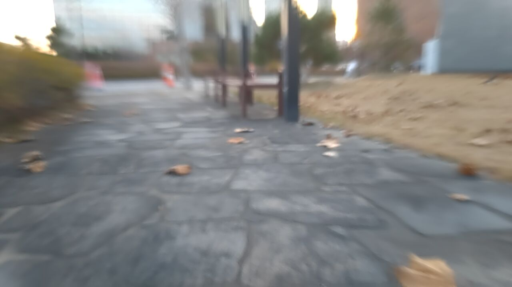
Unknown → Urethane
295.802 s · Window 294–296 sUrethane → Unknown
298.992 s · Window 298–300 sUnknown → Urethane
301.162 s · Window 300–302 sUrethane → Unknown
302.606 s · Window 302–304 sUnknown → Paving blocks
305.769 s · Window 304–306 sPaving blocks → Unknown
314.805 s · Window 314–316 s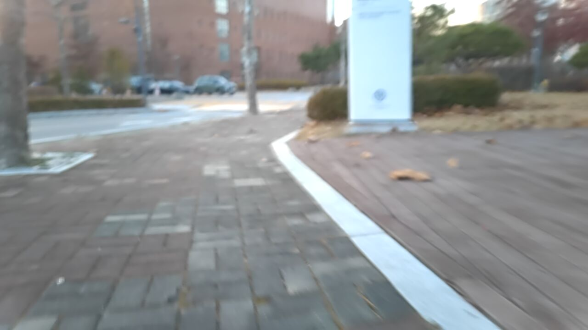
Unknown → Paving blocks
317.386 s · Window 316–318 s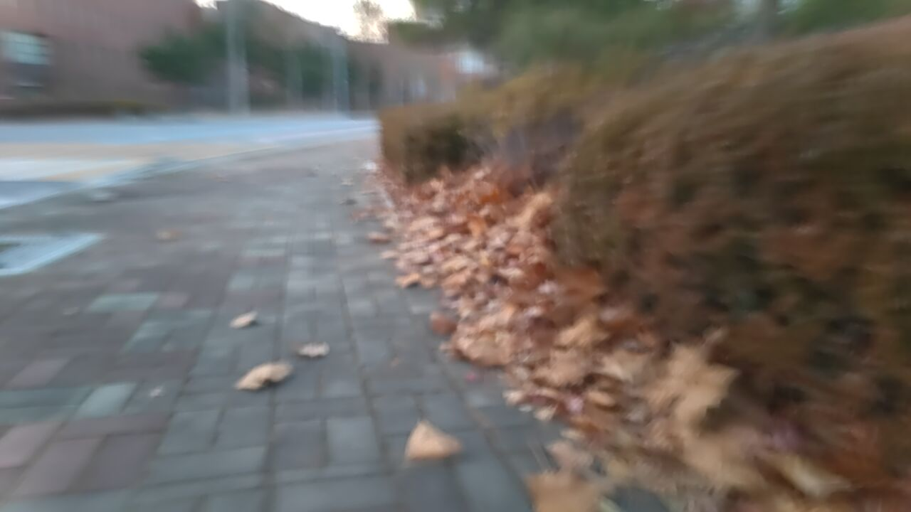
Paving blocks → Urethane
324.571 s · Window 324–326 sUrethane → Paving blocks
326.990 s · Window 326–328 sPaving blocks → Urethane
328.182 s · Window 328–330 sUrethane → Paving blocks
331.804 s · Window 330–332 s Paving blocks → Unknown
Paving blocks → Unknown
334.598 s · Window 334–336 sUnknown → Urethane
339.382 s · Window 338–340 sUrethane → Unknown
341.192 s · Window 340–342 s Unknown → Urethane
Unknown → Urethane
346.156 s · Window 346–348 s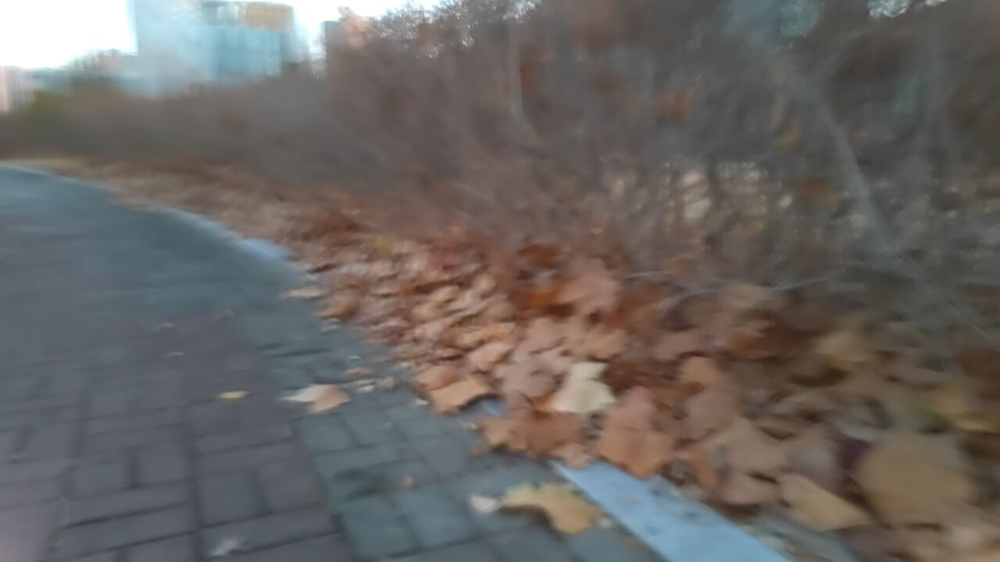
Urethane → Paving blocks
351.582 s · Window 350–352 sPaving blocks → Unknown
370.794 s · Window 370–372 sUnknown → Paving blocks
372.757 s · Window 372–374 sPaving blocks → Unknown
386.397 s · Window 386–388 sUnknown → Paving blocks
388.205 s · Window 388–390 sPaving blocks → Unknown
392.397 s · Window 392–394 s Unknown → Paving blocks
Unknown → Paving blocks
396.578 s · Window 396–398 sPaving blocks → Urethane
399.985 s · Window 398–400 sUrethane → Paving blocks
401.172 s · Window 400–402 sPaving blocks → Unknown
407.006 s · Window 406–408 s Unknown → Paving blocks
Unknown → Paving blocks
409.604 s · Window 408–410 sPaving blocks → Unknown
419.765 s · Window 418–420 sUnknown → Urethane
421.165 s · Window 420–422 sUrethane → Paving blocks
422.596 s · Window 422–424 sPaving blocks → Urethane
440.992 s · Window 440–442 sUrethane → Paving blocks
443.782 s · Window 442–444 sPaving blocks → Unknown
449.210 s · Window 448–450 sUnknown → Paving blocks
450.967 s · Window 450–452 sPaving blocks → Urethane
459.999 s · Window 458–460 sUrethane → Unknown
460.163 s · Window 460–462 sUnknown → Urethane
462.791 s · Window 462–464 sUrethane → Unknown
468.790 s · Window 468–470 sUnknown → Urethane
471.995 s · Window 470–472 s Urethane → Unknown
Urethane → Unknown
481.393 s · Window 480–482 sUnknown → Urethane
483.976 s · Window 482–484 s Urethane → Unknown
Urethane → Unknown
489.406 s · Window 488–490 sUnknown → Urethane
517.600 s · Window 516–518 sUrethane → Paving blocks
518.379 s · Window 518–520 s Paving blocks → Urethane
Paving blocks → Urethane
521.369 s · Window 520–522 sUrethane → Unknown
526.180 s · Window 526–528 sUnknown → Urethane
531.751 s · Window 530–532 sUrethane → Unknown
540.392 s · Window 540–542 sUnknown → Urethane
545.396 s · Window 544–546 sUrethane → Unknown
546.166 s · Window 546–548 sUnknown → Urethane
548.181 s · Window 548–550 sUrethane → Unknown
551.790 s · Window 550–552 s Unknown → Urethane
Unknown → Urethane
559.799 s · Window 558–560 s Urethane → Unknown
Urethane → Unknown
577.162 s · Window 576–578 sUnknown → Urethane
578.394 s · Window 578–580 sUrethane → Unknown
582.584 s · Window 582–584 sUnknown → Paving blocks
584.192 s · Window 584–586 s Paving blocks → Unknown
Paving blocks → Unknown
589.002 s · Window 588–590 s Unknown → Paving blocks
Unknown → Paving blocks
590.381 s · Window 590–592 sPaving blocks → Urethane
594.917 s · Window 594–596 sUrethane → Paving blocks
596.591 s · Window 596–598 sPaving blocks → Urethane
605.577 s · Window 604–606 sUrethane → Paving blocks
607.789 s · Window 606–608 sPaving blocks → Unknown
612.797 s · Window 612–614 s Unknown → Paving blocks
Unknown → Paving blocks
617.764 s · Window 616–618 sPaving blocks → Urethane
620.600 s · Window 620–622 sUrethane → Paving blocks
622.995 s · Window 622–624 s Paving blocks → Other
Paving blocks → Other
647.983 s · Window 646–648 sOther → Unknown
648.400 s · Window 648–650 sUnknown → Paving blocks
651.794 s · Window 650–652 sPaving blocks → Other
674.385 s · Window 674–676 s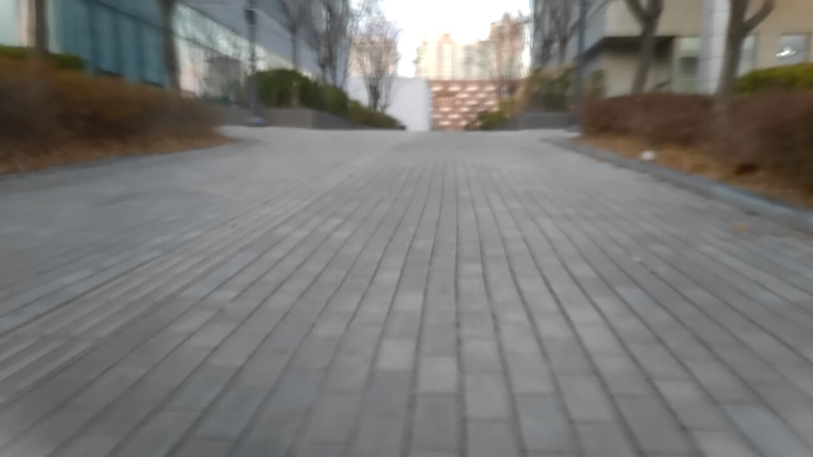
Other → Paving blocks
679.601 s · Window 678–680 sPaving blocks → Other
681.394 s · Window 680–682 sOther → Paving blocks
687.390 s · Window 686–688 sPaving blocks → Unknown
694.167 s · Window 694–696 sUnknown → Other
696.377 s · Window 696–698 sOther → Paving blocks
700.984 s · Window 700–702 sPaving blocks → Other
703.003 s · Window 702–704 sOther → Unknown
706.402 s · Window 706–708 sUnknown → Paving blocks
708.203 s · Window 708–710 sPaving blocks → Unknown
710.387 s · Window 710–712 sUnknown → Paving blocks
713.800 s · Window 712–714 sPaving blocks → Unknown
714.357 s · Window 714–716 sUnknown → Paving blocks
717.773 s · Window 716–718 sPaving blocks → Unknown
847.989 s · Window 846–848 sUnknown → Paving blocks
848.978 s · Window 848–850 sPaving blocks → Unknown
917.388 s · Window 916–918 sUnknown → Paving blocks
918.596 s · Window 918–920 s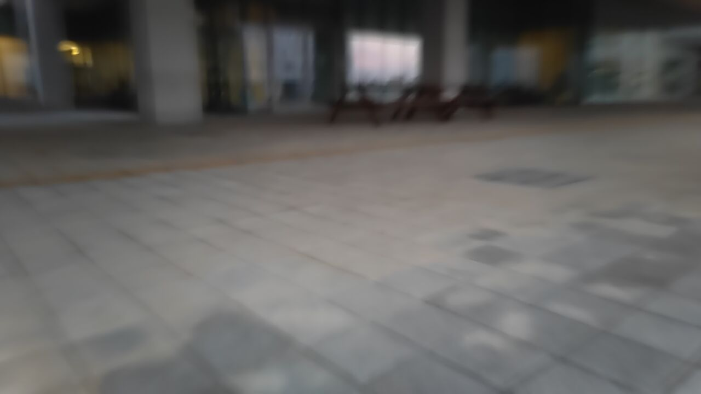
Paving blocks → Urethane
948.775 s · Window 948–950 sUrethane → Unknown
951.565 s · Window 950–952 sUnknown → Paving blocks
957.197 s · Window 956–958 s 2 s / D · Fine-tuned v2 · Quality — 64 changes